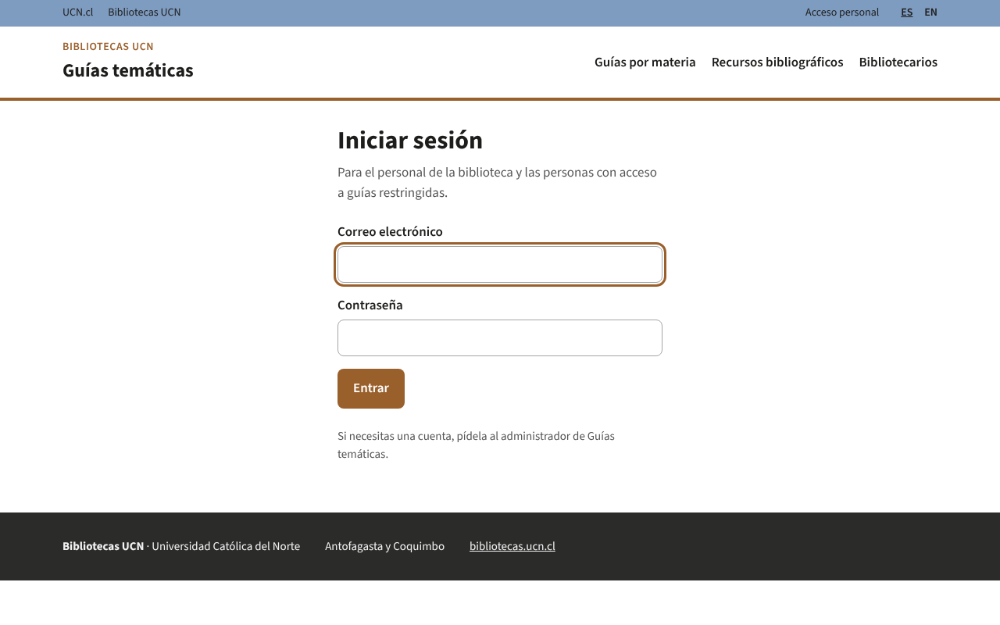
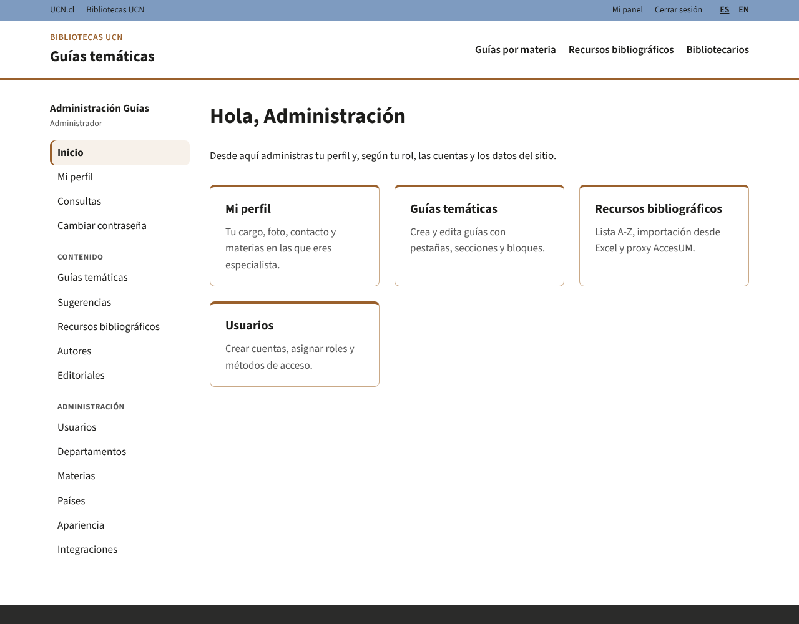
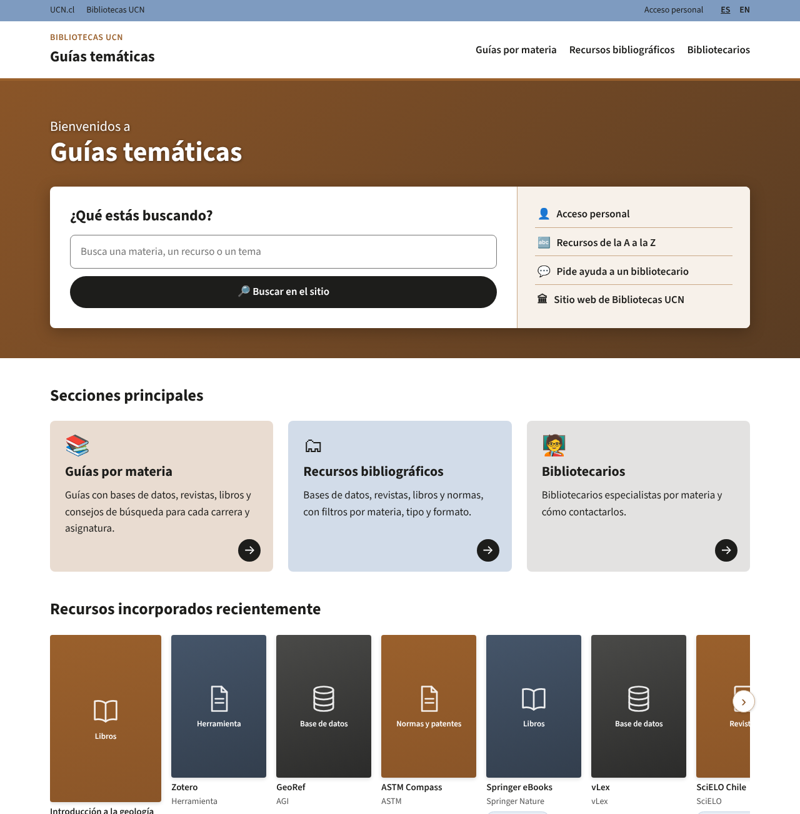
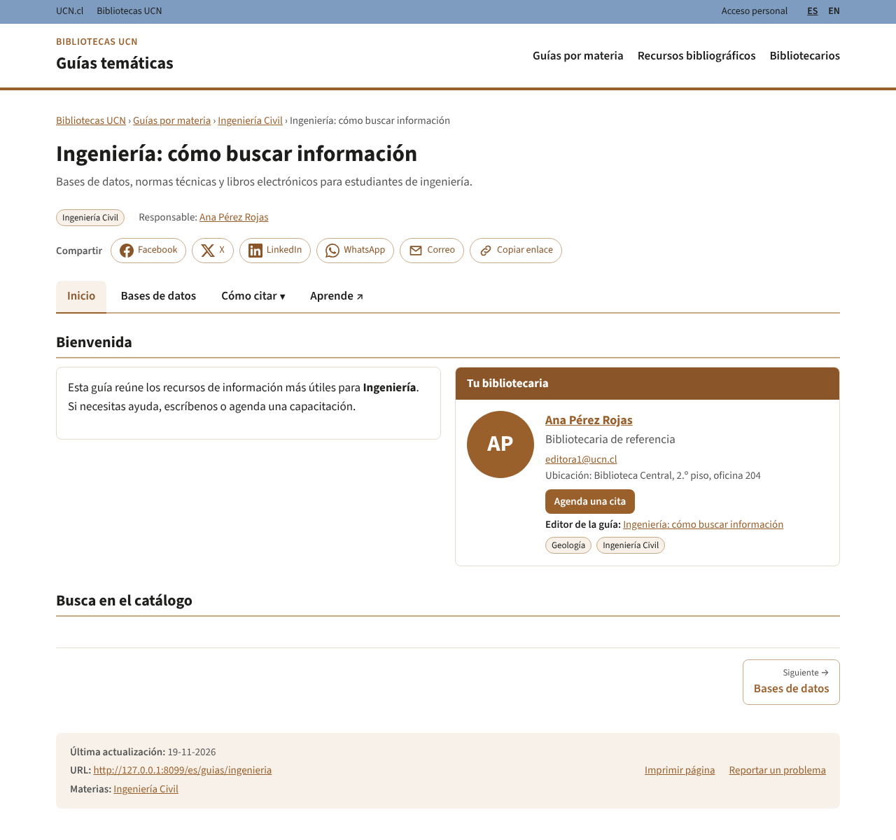
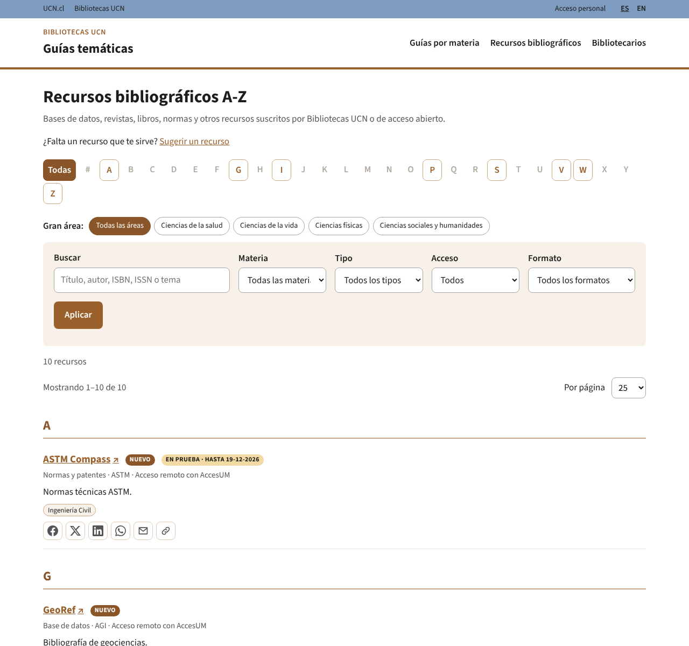
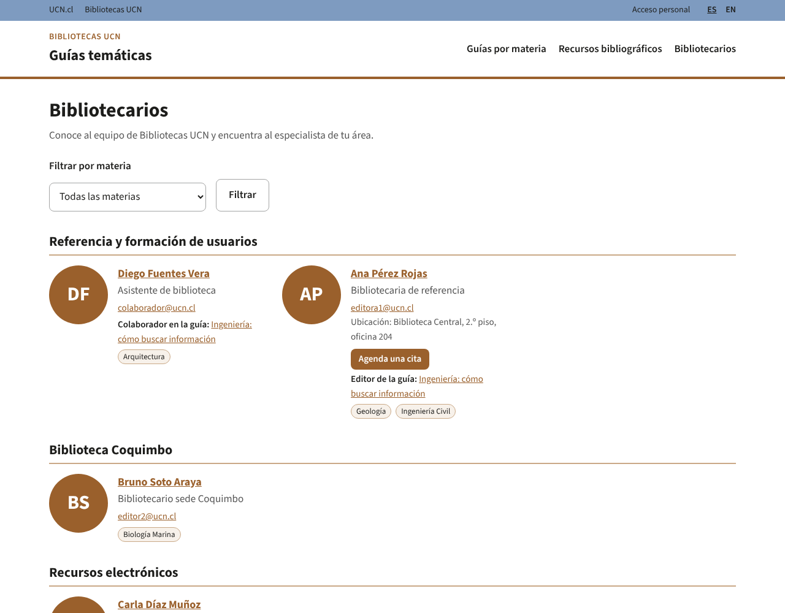
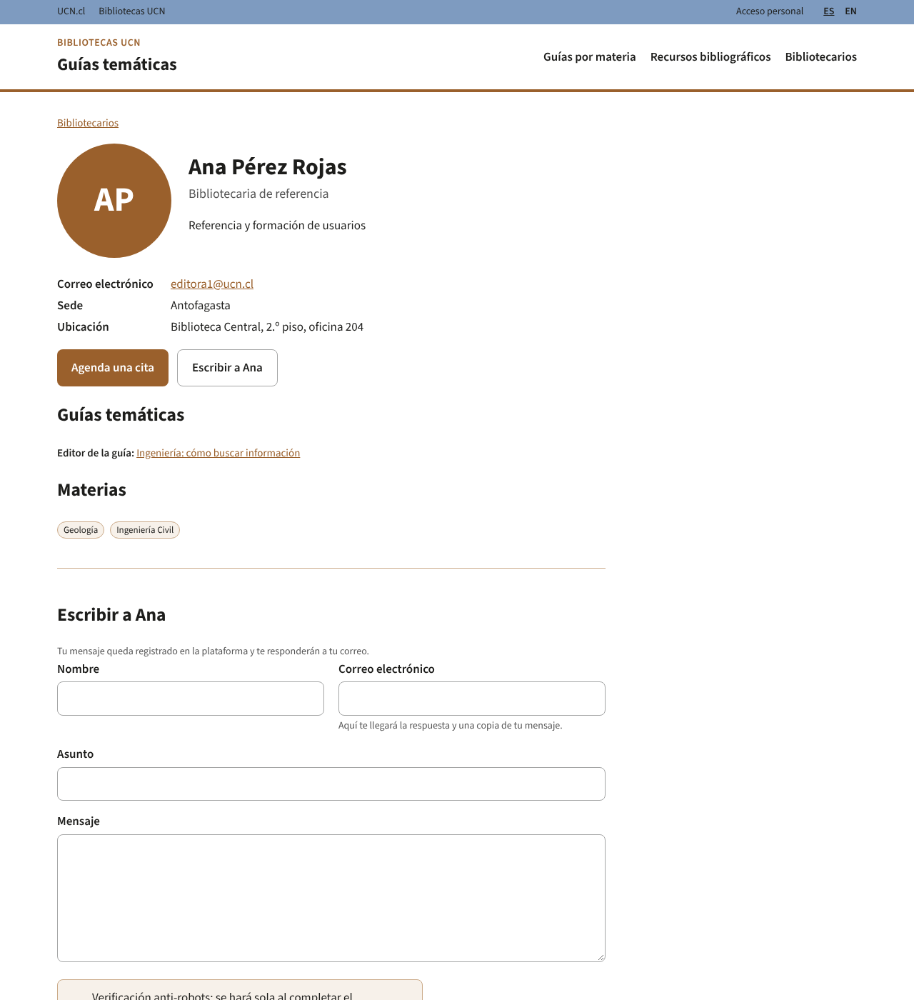
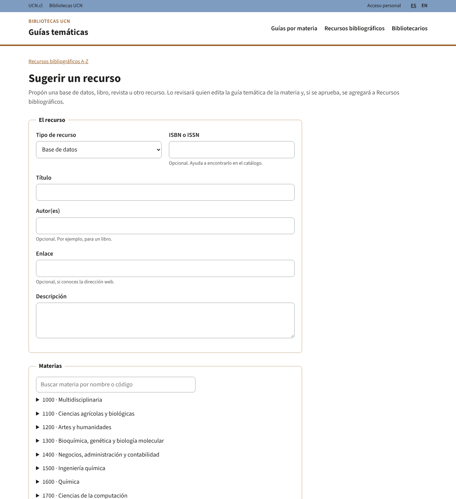

1. Introducción
1.1 ¿Qué es la plataforma?#
La plataforma de Guías temáticas reúne, por materia, los recursos de información que Bibliotecas UCN recomienda: bases de datos, revistas, libros, normas, sitios web, videos y consejos de búsqueda. Cada guía la prepara un bibliotecario o bibliotecaria y se publica en el sitio para estudiantes y académicos.
La plataforma tiene dos partes:
- El sitio público, que ve cualquier persona: portada, guías por materia, lista de recursos bibliográficos A-Z y directorio de bibliotecarios.
- El panel de trabajo, donde el personal de la biblioteca crea y mantiene las guías y los recursos. Solo entran las personas que un administrador ha registrado.
El sitio está en español e inglés: el selector ES / EN de la barra superior cambia el idioma de la interfaz.
1.2 Roles y permisos#
Cada persona tiene uno de estos roles. Los permisos se suman de abajo hacia arriba: un editor puede hacer todo lo que hace un colaborador, y un administrador todo lo que hace un editor.
| Acción | Lector | Colaborador | Editor | Administrador |
|---|---|---|---|---|
| Ver las guías restringidas que tiene asignadas | ✔ | ✔ | ✔ | ✔ |
| Entrar al panel, editar su perfil y responder consultas | ✔ | ✔ | ✔ | |
| Editar el contenido (pestañas, secciones y bloques) de las guías en que es coeditor | ✔ | ✔ | ✔ | |
| Revisar sugerencias de recursos de sus materias | ✔ | ✔ | ✔ | |
| Crear guías, publicarlas, elegir coeditores y eliminarlas | ✔ | ✔ | ||
| Crear guías con el asistente de inteligencia artificial | ✔ | ✔ | ||
| Gestionar la lista de recursos A-Z, autores y editoriales; importar y exportar | ✔ | ✔ | ||
| Editar todas las guías y cambiar su responsable | ✔ | |||
| Gestionar usuarios, departamentos, materias y países | ✔ | |||
| Cambiar la apariencia del sitio y las integraciones (catálogo, LDAP, correo, IA…) | ✔ |
- Responsable de una guía: el editor que la creó (o a quien el administrador se la asignó). Es quien edita los datos de la guía, la publica y la elimina.
- Coeditores: editores o colaboradores que el responsable agrega a la guía. Editan su contenido, pero no sus datos ni su publicación.
- Lector: persona que solo inicia sesión para ver guías de acceso restringido (por ejemplo, un curso piloto). No entra al panel ni aparece en el directorio.
1.3 Cómo entrar#
- Abre la plataforma y elige Acceso personal en la
barra superior (o entra directo a
/es/acceso). - Escribe tu correo electrónico y tu contraseña y presiona Entrar.

Según lo que haya configurado el administrador, la pantalla puede ofrecer hasta tres formas de entrar:
| Forma | Qué escribes |
|---|---|
| Contraseña propia | Tu correo y la contraseña que te dio el administrador (mínimo 12 caracteres) |
| Cuenta institucional (LDAP) | Tu usuario y contraseña de la UCN |
| Botón «Entrar con Google», con la cuenta cuyo correo coincide con el registrado |
Nadie puede registrarse solo: si no tienes cuenta, pídela al administrador de la plataforma. Para salir usa Cerrar sesión en la barra superior. Por seguridad, cierra la sesión si usas un computador compartido.
1.4 El panel de trabajo#
Al entrar llegas a Inicio del panel. A la izquierda está el menú, agrupado en secciones; cada persona ve solo las opciones de su rol.

| Sección del menú | Opciones | Roles |
|---|---|---|
| (sin título) | Inicio, Mi perfil, Consultas, Cambiar contraseña | Todo el personal |
| Contenido | Guías temáticas, Sugerencias | Todo el personal |
| Contenido | Recursos bibliográficos, Autores, Editoriales | Editor y administrador |
| Administración | Usuarios, Departamentos, Materias, Países, Apariencia, Integraciones | Administrador |
Junto a Consultas y Sugerencias aparece un número cuando hay mensajes o sugerencias pendientes.
En las tablas del panel, las acciones son botones con icono (✏️ editar, 🗑️ eliminar, 👁️ ver, etc.). Al pasar el mouse sobre ellos aparece su nombre. Antes de eliminar algo, la plataforma pide confirmación en una ventana.
1.5 Lo que ve el público#
Conviene conocer el sitio público, porque es el resultado de todo lo que se hace en el panel.
Portada. Imagen de fondo con un buscador (catálogo de la biblioteca o el propio sitio), accesos rápidos, tarjetas de las secciones principales y un carrusel con los recursos agregados más recientemente.

Guía publicada. Cada guía tiene pestañas (arriba o en un menú lateral), y cada pestaña muestra sus secciones y bloques. Arriba aparecen la ruta (migas de pan), el responsable y botones para compartir la guía; abajo, la fecha de actualización, las materias y los botones Imprimir y Reportar un problema.

Recursos bibliográficos A-Z. Lista de todos los recursos visibles, con índice alfabético y filtros por materia, tipo, acceso y formato. Los recursos suscritos se abren a través del proxy AccesUM, para que funcionen también fuera del campus.

Bibliotecarios. Directorio del personal con su ficha pública: cargo, contacto, guías que edita, materias y un formulario «Escribir a…» para enviarle una consulta.


Sugerir un recurso. Cualquier persona puede proponer un recurso que falte en la lista, sin crear cuenta. La sugerencia llega al panel (ver 2.4 Sugerencias).

Los formularios públicos tienen una verificación anti-robots propia que se resuelve sola mientras la persona escribe: no hay que marcar casillas ni reconocer imágenes.